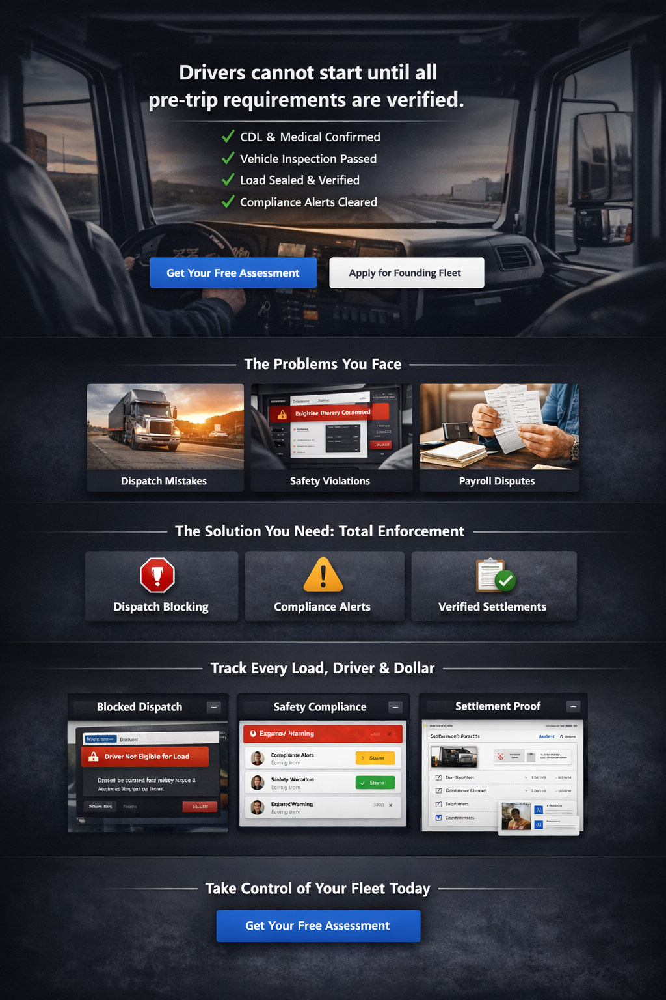
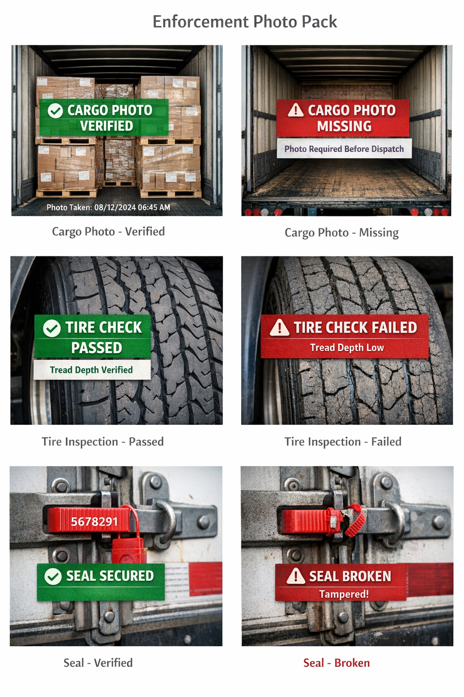
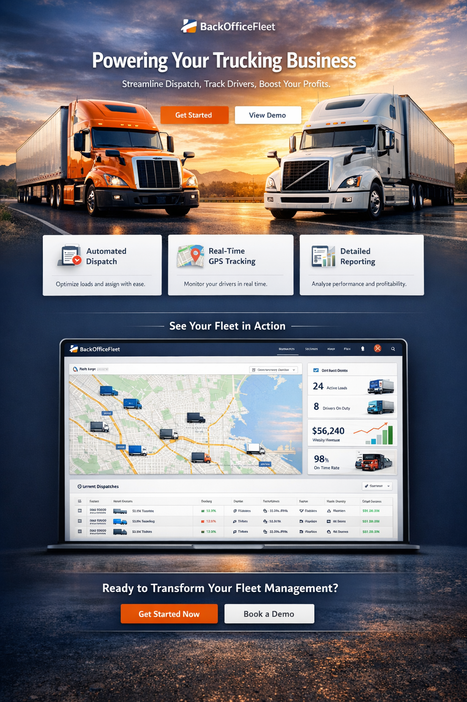
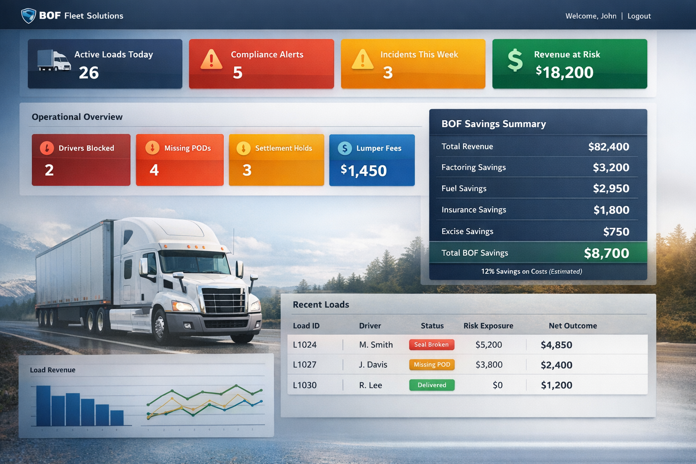

BackOfficeFleet runs your fleet back office for you — combining automation, workflow enforcement, and real operators to eliminate missing proof, billing chaos, compliance gaps, and administrative firefighting.

Explore how BackOfficeFleet helps internal fleet teams enforce execution standards, tighten documentation, and improve operational control.
Most fleets do not lose money because they lack software. They lose money because execution in the field is inconsistent, proof is incomplete, and the back office is forced to chase exceptions after the fact.

You don't have an operations problem. You have an enforcement problem.
BackOfficeFleet replaces fragmented administrative workflows with a hybrid model: automation handles repeatable workflows, and real operators handle exceptions, disputes, escalations, and anomalies.
Billing, settlements routing, document validation, alerts, and workflow authentication.
Disputes, edge cases, compliance escalations, and customer-facing resolution without pulling leadership into the weeds.

Not just visibility. Not just tracking. Execution control, verified documentation, delivery validation, managed exceptions, and financial accountability.
Drivers do not start until all required steps are verified.
Identify and surface credential, safety, and workflow risk before a violation occurs.
Validate delivery events against the intended destination and supporting proof.
If it isn't GPS-verified, timestamped, and documented, it did not happen.
Generate incident packets, POD proof, claim-ready records, and audit trails automatically.
Real people manage exceptions so the system stays useful in real-world operations.
BackOfficeFleet is designed for fleets operating 15+ trucks with active dispatch, billing, and compliance workflows.
This is not a lightweight tool. It is a fully managed system that enforces workflow, ensures documentation, and removes operational breakdowns.
If you're a smaller operation, BackOfficeFleet may not yet be the right fit — but we can revisit as you scale.
Primary emphasis remains on external carriers and internal fleet operations, with lighter applicability to field-service networks where movement, accountability, and proof matter.
Billing, settlements, POD validation, compliance automation, dispatch exception handling.
Inter-facility movement, internal accountability, transfer proof, cost visibility.
Light-touch fit for job completion proof and field workflow verification.
Light-touch fit for claim documentation, photo proof, and exception workflows.
Most fleets don't realize how much money they're losing until every step is enforced and verified.

Answer a few questions and get a real-time operational readiness score.
We are onboarding a limited group of founding fleets to help shape and refine the BackOfficeFleet system.
Only 10 fleets will be selected.
Apply to Become a Founding Fleet MemberExplore the demo after reviewing the assessment path or founding fleet application.